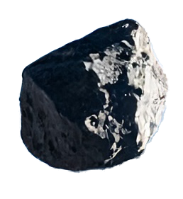
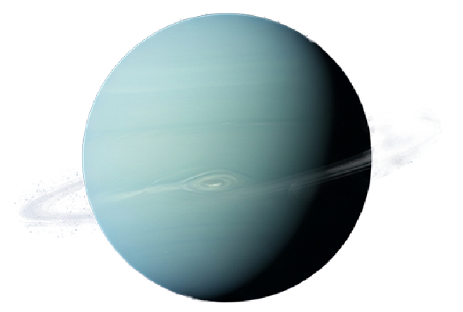

キコエ マスカ？ タビ ノ コウウン ヲ イノル！
Can you hear me well? Good luck on your journey!
ボイジャー1号
Voyager 1
Distance from Earth: about 162.6天文単位
1977年に打ち上げられた、NASAの太陽系外縁探査機です。木星と土星を探査した後、太陽圏を脱出し、現在、地球から最も遠い恒星間空間を航行している人工物です。
Launched in 1977, Voyager 1 is a NASA outer Solar System probe. After exploring Jupiter and Saturn, it exited the heliosphere and is currently the farthest human-made object traveling through interstellar space from Earth.
エリス
Eris
Distance from Earth: about 144億 km
準惑星の一つで、カイパーベルトのさらに外側に位置します。冥王星よりわずかに大きく、岩石と氷で構成されています。一つの衛星ディスノミアを持ちます。
Eris is a dwarf planet located beyond the Kuiper Belt. Slightly larger than Pluto, it is composed of rock and ice. It has one moon, Dysnomia.
マケマケ
Makemake
Distance from Earth: about 78億 km
準惑星の一つで、カイパーベルトに位置します。冥王星に次ぐ大きさの準惑星で、極めて低温の表面を持ち、メタンの氷が豊富に存在します。
Makemake is a dwarf planet located in the Kuiper Belt. It is the second largest dwarf planet after Pluto, with an extremely cold surface rich in methane ice.
ハウメア
Haumea
Distance from Earth: about 75億 km
準惑星の一つで、カイパーベルトに位置します。非常に高速な自転のためにラグビーボールのような楕円形をしており、2つの衛星を持つことが知られています。
Haumea is a dwarf planet located in the Kuiper Belt. Due to its very fast rotation, it has an elongated, rugby ball-like shape and is known to have two moons.
冥王星
Pluto
Distance from Earth: about 42億8,000万 km - 75億 km
かつては惑星とされていましたが、現在は準惑星に分類されます。太陽系の外縁にあるカイパーベルトに位置し、多様な地形と大気を持つ天体です。
Once classified as a planet, Pluto is now categorized as a dwarf planet. Located in the Kuiper Belt at the outer edge of the Solar System, it is a celestial body with diverse terrains and an atmosphere.
海王星
Neptune
Distance from Earth: about 43億 km - 47億 km
太陽系で最も外側にある主要な惑星です。強い風と大暗斑などの嵐が特徴で、青い色はメタンの吸収によるものです。
Neptune is the outermost major planet in the Solar System. It is characterized by strong winds and storms such as the Great Dark Spot, with its blue color resulting from methane absorption.

天王星
Uranus
Distance from Earth: about 25億7,000万 km - 31億5,000万 km
太陽系で3番目に大きいガス惑星で、その独特な横倒しになった自転軸が特徴です。メタンを含む大気のため、青緑色に見えます。
Uranus is the third largest gas planet in the Solar System, characterized by its unique sideways tilt. Its atmosphere, containing methane, gives it a blue-green appearance.
土星
Saturn
Distance from Earth: about 12億 km - 16億5,000万 km
太陽系で2番目に大きいガス惑星で、壮大な環で知られています。主に氷の粒子と岩石で構成されるこの環は、土星の最も特徴的な構造です。
Saturn is the second largest gas planet in the Solar System, known for its spectacular ring system. These rings, primarily composed of ice particles and rocky debris, are Saturn's most distinctive feature.

木星
Jupiter
Distance from Earth: about 5億8,800万 km - 9億6,800万 km
太陽系最大の惑星で、主に水素とヘリウムからなる巨大なガス惑星です。特徴的な大赤斑と呼ばれる巨大な嵐が存在します。多数の衛星を持ちます。
Jupiter is the largest planet in the Solar System, a giant gas planet composed mainly of hydrogen and helium. It features a distinctive Great Red Spot, a massive storm. It has numerous moons.
太陽
The Sun
Distance from Earth: about 1億5,000万 km (1天文単位)
太陽系の中心にある恒星です。水素とヘリウムを主成分とし、核融合反応によって光と熱を放出し、地球を含む惑星の生命を支えています。
The Sun is the star at the center of our Solar System. Composed mainly of hydrogen and helium, it emits light and heat through nuclear fusion, supporting life on Earth and other planets.
水星
Mercury
Distance from Earth: about 7,730万 km - 2億2,200万 km
太陽系で最も太陽に近い、最小の惑星です。薄い大気を持ち、表面はクレーターで覆われています。昼夜の温度差が非常に大きいです。
Mercury is the smallest planet and closest to the Sun in our Solar System. It has a thin atmosphere and a heavily cratered surface. It experiences extreme temperature variations between day and night.
火星
Mars
Distance from Earth: about 5,460万 km - 4億100万 km
太陽系で4番目の惑星です。赤い惑星として知られ、地球に似た自転周期と傾きを持っています。将来の有人探査の候補地です。
Mars is the fourth planet from the Sun. Known as the Red Planet, it has a rotation period and tilt similar to Earth. It is a potential candidate for future human exploration.
金星
Venus
Distance from Earth: about 4,100万 km - 2億6,100万 km
太陽系で2番目の惑星です。地球と大きさが似ていることから「地球の姉妹惑星」とも呼ばれます。厚い大気と極端な温室効果が特徴です。
Venus is the second planet from the Sun. Often called Earth's ""sister planet"" due to its similar size, it is characterized by a thick atmosphere and an extreme greenhouse effect.
月
Moon
Distance from Earth: about 384,400 km
地球の唯一の自然衛星です。太陽系の衛星の中で5番目に大きく、地球に最も近い天体であるため、夜空で最も明るく見えます。
The Moon is Earth's only natural satellite. It is the fifth largest moon in the Solar System and the brightest object in the night sky due to its proximity to Earth.
国際宇宙ステーション
International Space Station (ISS)
Distance from Earth: about 400 km
地上約400km上空を周回する巨大な有人実験施設です。アメリカ、ロシア、ヨーロッパ、日本、カナダなどの国際協力によって建設・運用されており、微小重力環境での科学実験や地球観測など、多岐にわたる研究が行われています。
The International Space Station (ISS) is a large, crewed research facility orbiting approximately 400 km above Earth. Built and operated through international collaboration among the United States, Russia, Europe, Japan, and Canada, it conducts diverse research, including scientific experiments in microgravity and Earth observation.
オーロラ
Aurora
Distance from Earth: about 100 km
オーロラは、地球の高緯度地域で見られる美しい光のカーテン現象です。太陽から放出された粒子が地球の大気圏に入り、酸素や窒素と衝突することで光を放ちます。緑や赤、紫など様々な色が夜空を彩り、特に極地付近で観察されます。古くから神秘的な自然現象として多くの人々を魅了してきました。
Aurora is a beautiful curtain-like light phenomenon seen in Earth’s high-latitude regions. Particles from the sun enter Earth’s atmosphere and collide with oxygen and nitrogen, creating light. Green, red, and purple colors paint the night sky, often observed near the poles. For centuries, people have been fascinated by this mysterious natural wonder.
ジェット機
plane
Distance from Earth: 10 km
ジェット機は、ジェットエンジンで推進する航空機です。1939年にドイツで初のジェット機が飛行し、第二次世界大戦後に発展。現在では、旅客機として約1万m前後の高高度を巡航し、効率的な長距離移動を可能にしています。
Jet aircraft is a plane powered by jet engines. The first jet plane flew in Germany in 1939, and they really developed after WWII. Today, jet aircraft are commonly used as passenger planes. They typically cruise at high altitudes, around 10,000 meters, making long-distance travel efficient.
エベレスト
Mount. Everest Peak
Distance from Earth: 8849 m
エベレストは世界最高峰であり、ヒマラヤ山脈に位置します。チベット語で「チョモランマ」、ネパール語で「サガルマータ」と呼ばれ、全ての登山家の憧れであり、目標。毎年、多くの登山家がその頂を目指す"挑戦の場"として知られています。
Mount Everest is the highest mountain in the world and is located in the Himalayas. It is called "Chomolungma" in Tibetan and "Sagarmatha" in Nepali. Climbers from all over the world dream of reaching the top, and every year many take on the challenge to stand at its peak.
いってらっしゃい！！
Have a nice journey!!
旅には音楽が必要でしょう？
Don't you think music is essential for the Journey?
Scroll Up!
スクロールして宇宙の旅に出かけましょう！